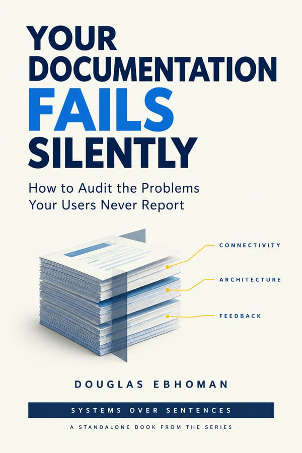

A free book on auditing documentation for the failures that never produce a complaint. Four chapters, a worksheet, and three audits run on real documentation, including mine.

Your documentation does not fail the way software fails. There is no error, no alert, no number that moves. A page stops being true, a reader works around it in four minutes, and nobody files anything.
The problem is not that the writing is bad. Most documentation that fails is already accurate. The faults that cost your readers time are structural, which is why reading the pages does not find them, and why the person least able to see them is the person who wrote them.
This book is the instrument I use for that, and three runs of it on documentation I own.
Accurate and Failing
Why documentation fails without anyone reporting it, why reading cannot find those faults, and why more care is not the answer.
The Complaint Is Not the Problem
How to begin an audit when nobody has complained, which is the normal case and the hard one.
The Documentation Audit
The instrument itself. Connectivity, architecture and feedback, run separately, producing one findings list with an address against every row.
Three Runs
The audit on three real documentation sets, all of them mine. Fourteen findings in a set I would have told you was fine, a published guide with a live 404 that no reader ever mentioned, and one repair that put another page out of date within the hour.
The Audit, as a Worksheet
The questions with nothing around them, so you can run it without reading the chapter again.
What to Do with What You Found
Including the findings you cannot fix on your own, and what to do with those.
None of this is on my blog, and none of it is anywhere else. The ten posts in the {{ series.name }} series are free on this site and always will be, and this book is not a repackaging of them. It is the part I had not written.
One email to confirm your address. The book is one click after that. What I do with your address.
I am Douglas Ebhoman. I work on documentation systems for DevTools and SaaS companies, mostly API documentation and docs-as-code, from Prague.
The three audits in chapter 4 are on my own work, and all three found faults. That is the point of them. A worked example on someone else’s documentation only proves that their set had problems, which nobody doubted.